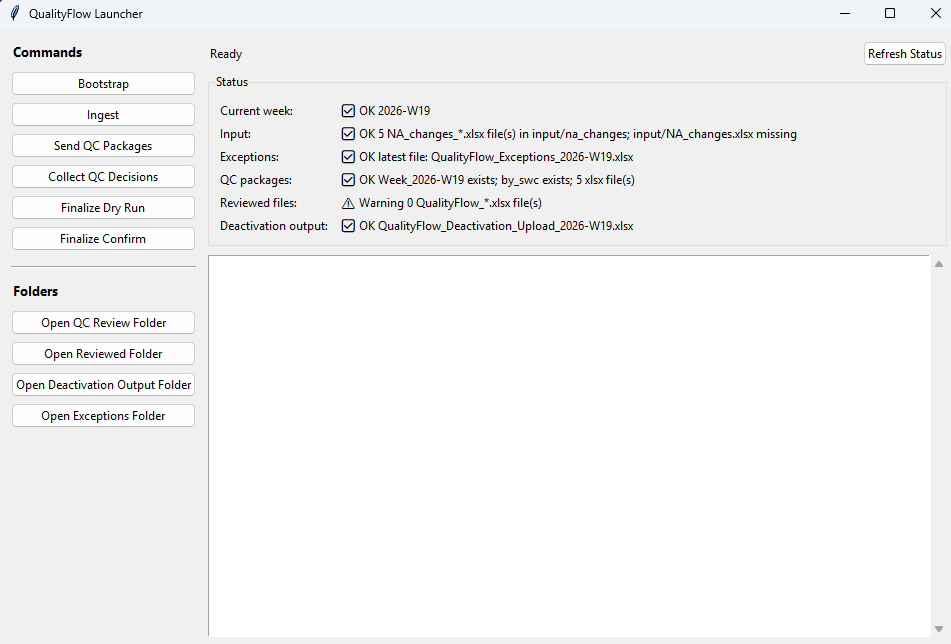

A set of validation and review workflows for tag register completeness, reporting readiness, SQL lookup against project inspection/progress data sources, QC review packages, and Power BI-ready monitoring.
The toolkit focuses on data-quality signals that affect reporting, handover readiness, and downstream project-system use.
Description, GWBS, FWBS, drawing references, parent tags, source fields, and other reporting-critical attributes.
Checks distinguish true completeness from placeholder or non-usable values that can mask readiness gaps.
Issue lists surface duplicated tags, naming inconsistencies, status mismatches, and incomplete hierarchy context.
Weighted views show which contractors, disciplines, or setup areas need attention before reporting or review close.
A SQL-backed internal workflow is actively used in site workflows to support lookup against project inspection/progress data sources, QC package generation, review collection, controlled output preparation, and monitoring-ready data.

The dashboard is an anonymized view of the same data-quality thinking: field completeness, contractor readiness, weighted data score, and key issue signals. Values and labels are masked for confidentiality.
SQL, Python, and Power BI are the tool layer. The core value is controlled engineering data validation before downstream reporting, review, and handover-related workflows depend on the data.
Open dashboard